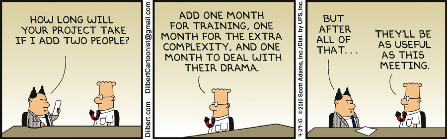

Platform.sh
Software Management Lessons from the 1960s
Presented by Larry Garfield (@Crell)
@Crell

- D.R.I.E.S., Platform.sh
- Drupal 8 Web Services Lead
- Drupal Representative, PHP-FIG
implements Huggable
IBM System/360

Announced 1964


Legacy
- 8-bit byte
- Byte-addressable memory
- 32-bit words
- EBCDIC
Lives on as IBM zSeries

Lead team
Lead architect

Lead manager

"The Mythical Man Month"
1975

Anniversary edition, 1995
It's been another 20 years...
Is it still valid?
Brooks Law
Adding [people] to a late software project makes it later.
—The Mythical Man-Month
Communication is hard

Tasks are not parallelizable

Even for Unskilled tasks
Adding people incurs cost
(Depending on swim lanes, and how early)
Is it still true?
Yup


What should we learn from this?
 .
Introduction
System/360
MMM, 1975
NSB, 1986
20th Anniversary Edition, 1995: Still mostly true
20 years later again... what's still true? Lots.
Themes:
- Conceptual integrity (Aristocracy, inequality)
-- Divide and conquer (incl story from DRAFT QA tester)
-- Communication paths, surgical teams, purpose of organization
-- Brooks Law
- Top down design
-- Even if doing Agile-ish iteration
-- Tests. In 1975.
- Communication
-- Documentation (incl manual vs. spec vs implementation)
-- More ppl OR more LOC => more time per LOC.
- Mentorship (2nd system effect, and final notes on growing architects)
NSB
- Essence vs. Incidental Complexity
- No more big leaps, lots of little ones
- OSS
- Programming Systems Product: 9x more work, but valuable
.
Introduction
System/360
MMM, 1975
NSB, 1986
20th Anniversary Edition, 1995: Still mostly true
20 years later again... what's still true? Lots.
Themes:
- Conceptual integrity (Aristocracy, inequality)
-- Divide and conquer (incl story from DRAFT QA tester)
-- Communication paths, surgical teams, purpose of organization
-- Brooks Law
- Top down design
-- Even if doing Agile-ish iteration
-- Tests. In 1975.
- Communication
-- Documentation (incl manual vs. spec vs implementation)
-- More ppl OR more LOC => more time per LOC.
- Mentorship (2nd system effect, and final notes on growing architects)
NSB
- Essence vs. Incidental Complexity
- No more big leaps, lots of little ones
- OSS
- Programming Systems Product: 9x more work, but valuable
Larry Garfield
Director of Runtimes and Integrations Platform.sh
Continuous Deployment Cloud Hosting
Stalk us at @PlatformSH